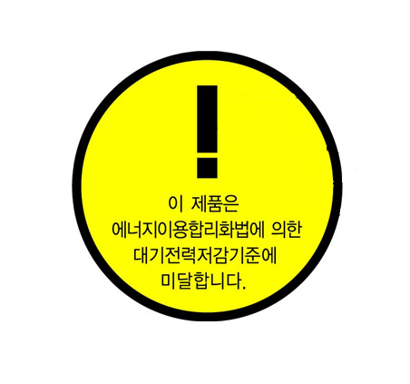

초록초록(here 혹은 로고 클릭)
아름다운 녹색 소비

대기전력경고표지
전자제품을 사용하지 않을 때 소모되는 대기전력을 저감시킨 대기전력을 저감시킨 대기전력저감우수제품의 보급을 확대하고 관련 기술의 개발을 촉진하기 위한 의무적인 신고 제도
대기전력경고표지?
대기전력저감프로그램은 대기전력 1W이하 달성 국가 로드맵인 "Standby Korea 2010"에 따라 2008년 세계 최초로 도입된 의무적인 대기전력 경고표시제를 포함한다 대기전력저감프로그램 중 경고표시제 대상 21품목의 제조·수입업자는 반드시 고시된 기술기준과 측정방법에 따라 대기전력시험관 등에서 제품을 시험한 후, 그 결과에 따라 60일 이내에 제품을 신고하여야 한다.
- 법적근거
- 설명
「에너지이용합리화법」 제18조, 제19조, 제20조, 제21조 등
“대기전력저감 프로그램 운용규정” (산업통상자원부고시 제2017-91호)
